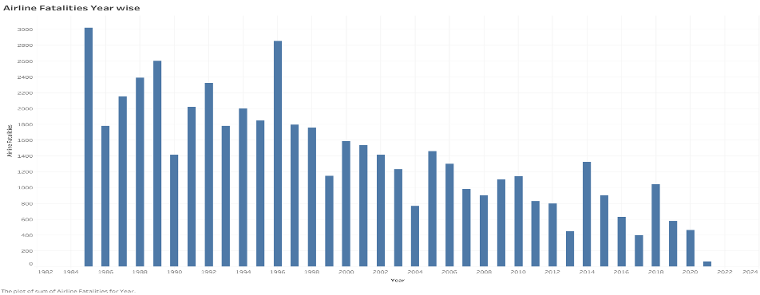
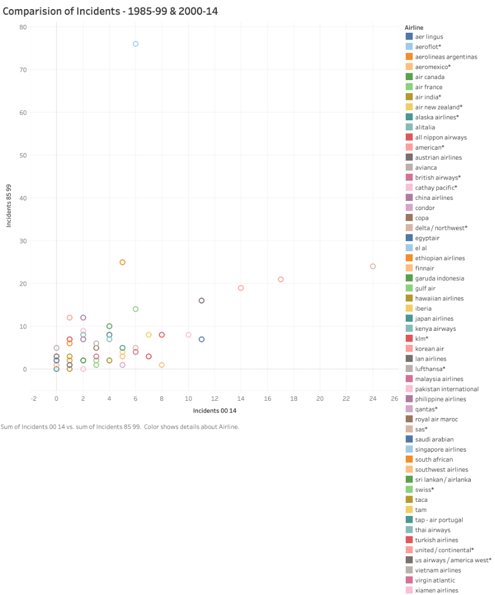
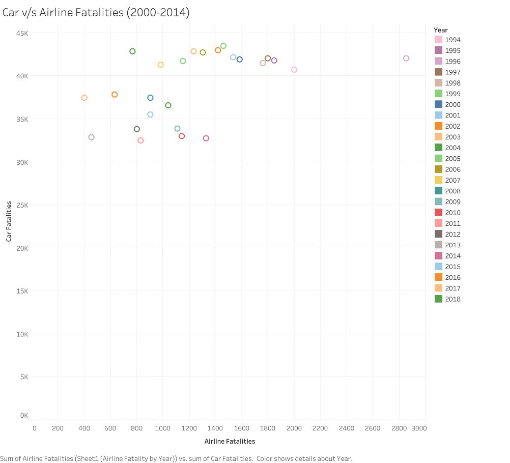
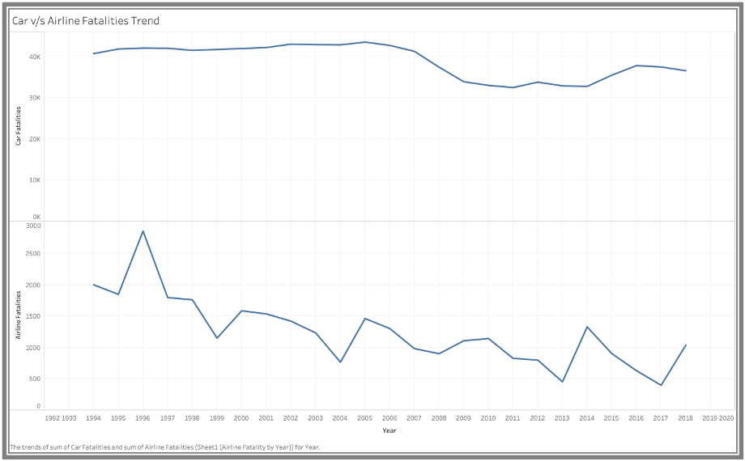
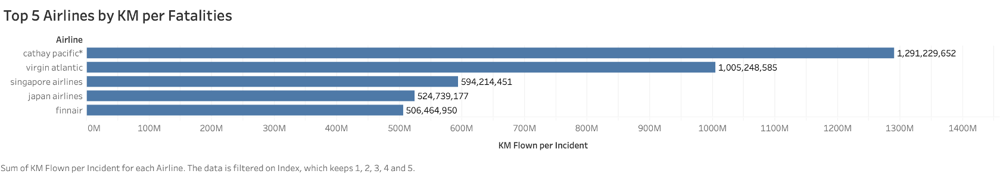
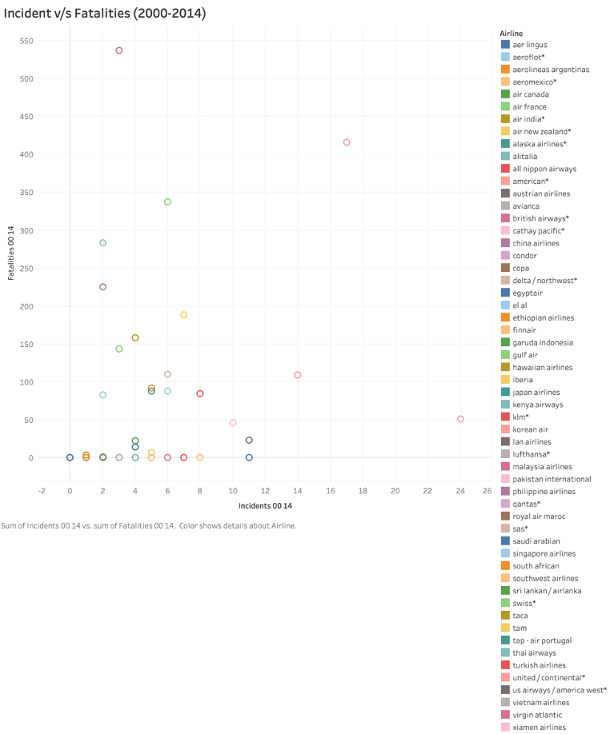

Airline Safety Analysis

View code on github
Introduction
Due to media propaganda, it is often thought airline travel is one of the risky modes of travel. The aim of this project to carry out detail analysis with visualization on airline travel v/s travel by car, rail and conclude.
The aim of this project is to compare the airline fatalities with other modes of travel and also compare the airline fatalities after year 2000 and prior to that
Data Used
- Dataset: Airline Fatality by Year
- Dataset: Car Fatality by Year
- Dataset: Geographical Data
- Dataset: Gov Transportation Data
Technology Used
- PowerPoint
- Tableau
Proposal
Compare Airline fatalities between 1985-1999 & 2000-2018. Also compare Airline fatalities vs car/train fatalities
Analysis
Due to the improved safety measures, technical advancements in air travel, the fatalities have reduced by a great number, especially after 2000, when compared to historic fatality numbers (1985-99) considering the usage of flight travel has gone up significantly.
{kind=link}
Comparison between incidents occurred prior to year 2000 and after 2000 shows that the umber of incidents has reduced with advancement of technology.
{kind=link}
A comparison of fatalities between airline vs car, which is one of the most widely used mode of travel: Auto fatalities are the data captured only from USA. Airline fatalities are captured from across the world.
{kind=link}
Fatalities Trend – Airline vs Car
{kind=link}
Some airlines have done well as compared to others based on the fatalities even though they have flown high number of kilometers per week. Below are top 5 airlines with maximum KM flown per fatality
{kind=link}
Airline Performance – Incidents vs Fatalities
Few Airlines have a smaller number of incidents, but high number of fatalities. Whereas few airlines have a greater number of incidents but a smaller number of fatalities.
{kind=link}
{kind=link}
{kind=link}
{kind=link}
Conclusion
- Based on the trends, we can clearly see which airlines are performing good and which airlines are consistently having incidents, so there is a chance that using the historic data we can predict future for a particular airline.
- Number of airline fatalities have reduced with the advancement of technology.
- Airline travel is still one of the safest modes of travel when compared to other popular mode of travel like car travel.
- Few airlines have higher number of fatalities as compared to the number of incidents. We can avoid those airline.